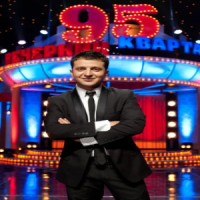
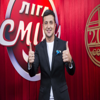
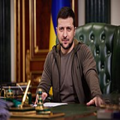
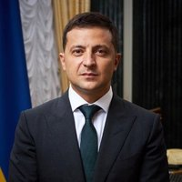
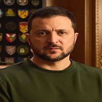
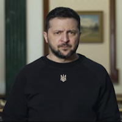
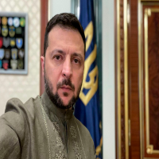

Зеленський Володимир Олександрович
Володи́мир Олекса́ндрович Зеле́нський (нар. 25 січня 1978, Кривий Ріг, Українська РСР, СРСР) —
український державний діяч, шостий і чинний Президент України з 20 травня 2019 року.
До вступу на посаду здобув популярність як шоумен, актор, комік, режисер, продюсер і сценарист.
Був співвласником і художнім керівником «Студії Квартал-95» (2003—2019) та генеральним продюсером телеканалу «Інтер» (2010—2012).
Політичну кар'єру розпочав 2019 року та балотувався на виборах президента України 2019 року.
За підсумками голосування обраний Президентом України.
- Зеленський у кварталі 95

- Зеленський на шоу Ліга Сміху

- Зеленський на посаді Президента України

Додаткова фото галерея:




Посилання на інформаційне джерело:
Wikiki